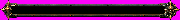
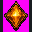
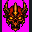
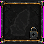
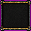
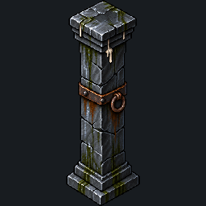

Cinco fontes para seis assets: a fonte UI02 contém os dois marcadores. Direção visual das seis entradas v01 aceita pelo dono em 16/10/2026. Nenhum asset oficial ou código alterado; normalização/admissão e implementação ficam com Claude. Aceite em jogo continua pendente.
UI01 — progresso
Fonte 2172×724; objeto detectado 2101×228 (~9,21:1, alvo de direção 8:1). Moldura vazia com encaixe de caveira à direita. A barra atual do jogo tem 4 px: integrar esta arte exige decidir layout em outra frente.
Fonte UI01 v01Prévia a 180 px de largura (~20 px de altura), sem teste de layout:

UI02-A — jogador
Losango âmbar, metade esquerda da fonte UI02. Recorte diagnóstico 554×694; escala final e equilíbrio com a caveira dependem da preparação.
Fonte pareada UI02 v01
UI02-B — chefe
Caveira vermelho-escura/âmbar, metade direita da mesma fonte; ornamento mais elaborado que o losango. Conteúdos não se tocam nem cruzam o centro.
Fonte pareada UI02 v01
UI03 — bloqueado
Fonte 1254×1254, caixa 957×929; cadeado no canto e silhueta discreta. Mesma caixa detectada da casela desbloqueada, sem substituição de ícone no jogo.
Fonte UI03 v01
UI04 — desbloqueado
Fonte 1254×1254; moldura correspondente à UI03, centro escuro livre, sem cadeado ou silhueta. Interior texturizado; leitura com ícone real será avaliada na implementação.
Fonte UI04 v01
PR01 — pilar completo
Fonte 1254×1254 com alfa nativo. Capitel/base completos, correia e argola sem corrente nova. Caixa visível 397×1099 com limiar alfa ≥16. Corpo amostrado com alfa 252–253; traços de alfa baixo fora da silhueta precisam de auditoria/normalização futura. Fonte intacta.
Fonte PR01 v01